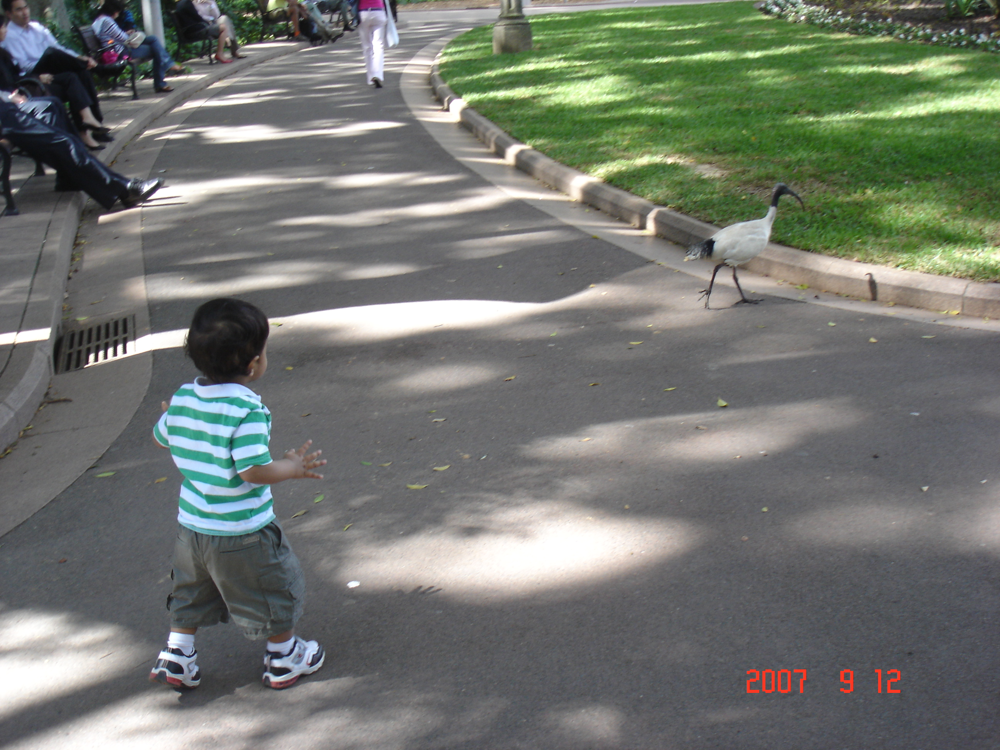
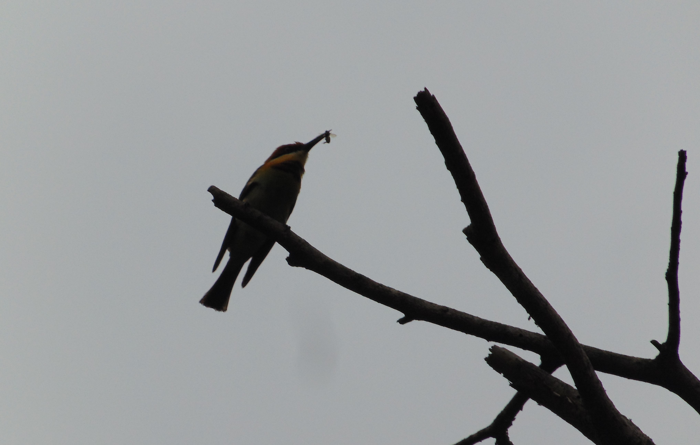

Home
Welcome to my blog. I’m Vikram, a 16 year-old student in Mumbai, India.
Wildlife and nature have attracted me since I was young — my parents tell me that even as a toddler I was captivated by the sight of birds.
 One-year-old me trying to keep up with an Australian white ibis
Over the years, I’ve observed all sorts of exotic life forms in national parks, bird sanctuaries, week-old sandwiches forgotten in backpacks, and even hidden in the concrete jungle of my city.
In the hustle-bustle of everyday life, we often let ourselves become oblivious to the natural world that exists outside of human civilisation. The detached solitude of patiently observing a chestnut-headed bee-eater until it finally wins its meal with a graceful arc through the air serves as a welcome reminder that there is a beautiful world beyond the confines of man-made constructs.
 A triumphant bee eater with an insect in its beak
Over the past few years, my interest has turned into a passion for birdwatching and nature photography (although animals of any kind are enough to pique my interest). This blog aims to capture some of my experiences — and hopefully inspire you to better appreciate the fascinating fauna all around us.
 Bees in the flowers outside the window — adapting Dumbledore’s maxim, “Wonders can be found, even in the smallest of things, if only one remembers to open their eyes.”
Bees in the flowers outside the window — adapting Dumbledore’s maxim, “Wonders can be found, even in the smallest of things, if only one remembers to open their eyes.”